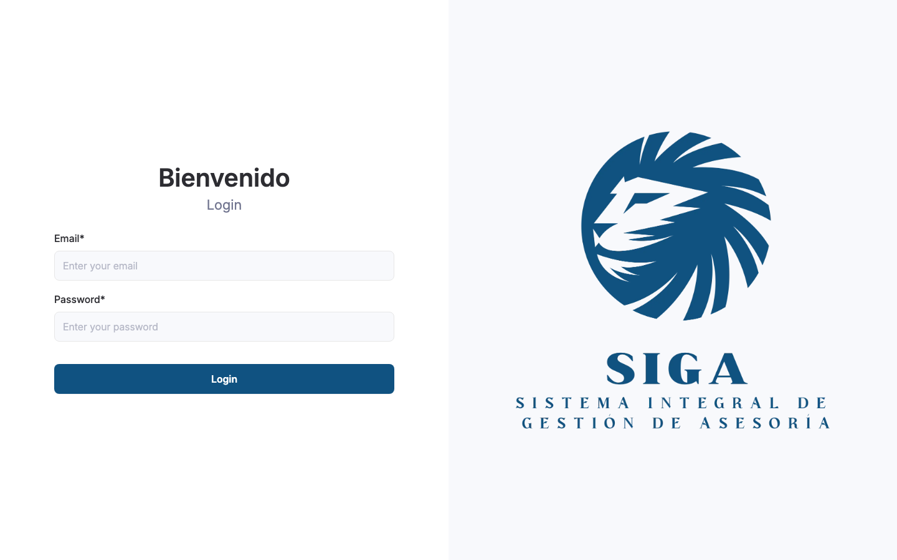

SIGA es la plataforma de gestión de clientes, instrumentos, transacciones y reportes regulatorios (BCU) de Siga Solutions. Tras autenticarse, el menú lateral permite acceder a cada módulo.
Inicio de sesión
- Abra la URL de la aplicación que le haya indicado su administrador.
- Ingrese su correo electrónico y contraseña.
- Si las credenciales son válidas, el sistema lo redirige al área protegida.

Sesión: por inactividad prolongada el sistema
cierra la sesión automáticamente y lo devuelve a la pantalla de
login. Vuelva a autenticarse para continuar.
Menú lateral
El menú de la izquierda agrupa las funciones principales. Puede expandirlo o colapsarlo con el control del propio panel.
| Módulo | Función principal |
|---|---|
| Notificaciones | Alertas del sistema (instrumentos incompletos, clientes desconocidos, etc.) |
| Clientes | Alta, edición y consulta de clientes y cuentas |
| Perfiles de Riesgo | Composición de carteras vs. rangos de renta fija/variable y generación de reportes |
| Instrumentos | Clasificación BCU, composición de activos y activación para reportes |
| Transacciones | Registro BCU, corrección de datos y exportación XML/XLSX trimestral |
| Informe Anual | Anexos III, V y VII sobre servicios a clientes (según configuración del entorno) |
| Ayuda | Esta guía, embebida dentro de la aplicación |
Nota: algunos ítems (Asesor, Carteras
Individuales, Informe Anual) pueden ocultarse según la
configuración del entorno. Si no ve un módulo, consulte a
soporte.
Cerrar sesión
Use el botón de Logout en la parte inferior del menú lateral. El sistema limpia la sesión y regresa a la pantalla de login.